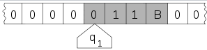
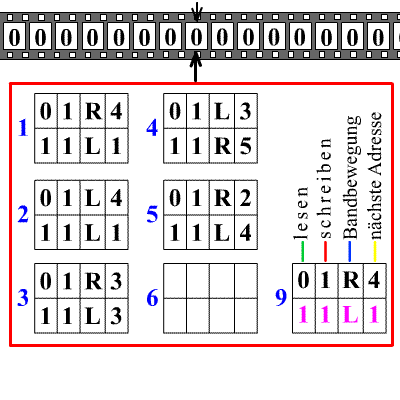
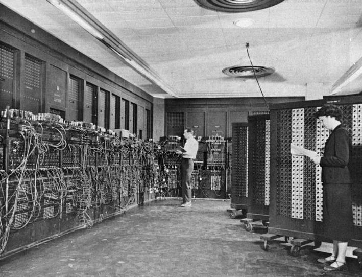

Primera generación#
Primera generación (1946 - 1957): Válvulas de vacío#
Los primeros ordenadores estaban construidos con tubos de vacío.

En un principio no existían sistemas operativos, se programaba directamente sobre el hardware. Los programas estaban hechos directamente en código máquina y el control de las funciones básicas se realiza mediante paneles enchufables.
1936 Alan M. Turing#
Alan Mathison Turing, fue un matemático, lógico, informático teórico, criptógrafo. Es considerado uno de los padres de la ciencia de la computación y precursor de la informática moderna. Proporcionó una influyente informatización de los conceptos de algoritmo y computación
La máquina de Turing
{kind=link}
Una cinta que se divide en celdas, una al lado de la otra. Cada celda contiene un símbolo de algún alfabeto finito. El alfabeto contiene un símbolo especial llamado blanco (aquí escrito como “B”) y uno o más símbolos adicionales. La cinta se supone que es arbitrariamente extensible hacia la izquierda y hacia la derecha, es decir, la máquina de Turing siempre es provista con tanta cinta como necesite para su computación. Las celdas que no se hayan escrito previamente se asumen que están rellenas con el símbolo blanco. En algunos modelos la cinta tiene un extremo izquierdo marcado con un símbolo especial; la cinta se extiende o es indefinidamente extensible hacia la derecha. Un cabezal que puede leer y escribir símbolos en la cinta y mover la cinta a la izquierda y a la derecha una (y sólo una) celda a la vez. En algunos modelos el cabezal se mueve y la cinta es estacionaria. Un registro de estado que almacena el estado de la máquina de Turing, uno de los estados finitos. Hay un estado inicial especial con el que el registro de estado se inicia. Una tabla finita de instrucciones (llamada ocasionalmente como tabla de acción o función de transición)
{kind=link}
Durante la segunda guerra mundial, trabajó en descifrar los códigos nazis, particularmente los de la máquina Enigma, y durante un tiempo fue el director de la sección Naval Enigma de Bletchley Park. Se ha estimado que su trabajo acortó la duración de esa guerra entre dos y cuatro años.


En el campo de la inteligencia artificial, es conocido sobre todo por la concepción de la prueba de Turing (1950), un criterio según el cual puede juzgarse la inteligencia de una máquina si sus respuestas en la prueba son indistinguibles de las de un ser humano. La carrera de Turing terminó súbitamente tras ser procesado por homosexualidad en 1952. Dos años después de su condena, murió.
1939 John von Neumann#
Matemático de origen húngaro de nombre John von Neumann, apoyándose en los principios que marcó Alan Turing en la conocida como «máquina de Turing», desarrolló la Arquitectura de von Neumann, un modelo de computador que propició un gran salto en el desarrollo de los primeros computadores y que, además, hoy aún sigue vigente
El concepto más innovador de este modelo es que el programa y los datos que se van a procesar son almacenados juntos en memoria

En 1937 Howard H. Aiken#
Profesor de Hardvard, concibe un ordenador completamente automático, a base de relés y con entrada de datos e instrucciones mediante fichas perforadas, Harvard Mark I
Mark I era una máquina de grandes dimensiones, medía unos 15,5 metros de largo, unos 2,40 metros de alto y unos 60 centímetros de ancho y pesaba aproximadamente unas cinco toneladas. La Mark I recibía sus secuencias de instrucciones (programas) y sus datos a través de lectoras de cinta perforada de papel y los números se transferían de un registro a otro por medio de señales eléctricas.El cableado interno de la Mark I tenía una longitud de más de 800 kilómetros, con más de tres millones de conexiones. Los resultados producidos se imprimían usando máquinas de escribir eléctricas o perforadoras de tarjetas. Aunque tenía componentes electromecánicos era una máquina automática eléctrica. Era capaz de realizar 5 operaciones aritméticas (suma, resta, multiplicación, división y referencia a resultados anteriores). Su interior estaba compuesto por 750 000 piezas de diferentes variedades (ruedas rotatorias para los registros, relevadores…). Estaba compuesta de más de 1400 interruptores rotatorios de diez posiciones en el frente de la máquina para visualizar los valores de los registros constantes que se le introducían. Además de los registros constantes la máquina contenía 72 registros mecánicos. Cada uno de los registros mecánicos era capaz de almacenar 23 dígitos, los dígitos que se usaban para el signo era un 0 para signo positivo y un 9 para el signo negativo. La posición de la coma decimal estaba fija durante la solución de un problema, pero podía ajustarse previamente de manera que estuviera entre dos dígitos cualquiera. La máquina contaba también con mecanismos que permitían efectuar cálculos de doble precisión (46 decimales), mediante la unión de dos registros, en una forma análoga a la máquina analítica de Babbage.

Hacia finales de 1950 aparecen las tarjetas perforadas que sustituyen los paneles enchufables. Las tarjetas perforadas supusieron un enorme paso ya que permitían codificar instrucciones de un programa y los datos en una cartulina con puntos que podía interpretar el ordenador. La mayoría de los programas usaban rutinas de E/S y un programa cargador (automatizaba la carga de programas ejecutables en la máquina) esto constituía una forma rudimentaria de sistema operativo.
1946 ENIAC#
ENIAC (Electronic Numerical Integrator And Computer), fue inicialmente diseñada para calcular tablas de tiro de artillería destinadas al Laboratorio de Investigación Balística del Ejército de los Estados Unidos.

1948 Manchester Mark I#
Primer ordenador digital con programa almacenado La primera computadora electrónica del mundo con programa almacenado en la misma máquina. Su diseño se pensó para demostrar el potencial que tendrían los programas almacenados en la computadora, por eso se considera la primera computadora que funcionaba con memoria RAM
{kind=link}
1949 Whirlwind#
Jay Forrester, MIT. Primer ordenador de tiempo real

1949 EDSAC#
Electronic Delay Storage Automatic Computer, Maurice Wilkes, Universidad de Cambridge, Inglaterra. La EDSAC fue el primer calculador electrónico en el mundo en contar con órdenes internas,

1952 ILLIAC I#
Universidad de Illinois en Urbana - Champaign, se basaba en la arquitectura de von Neumann